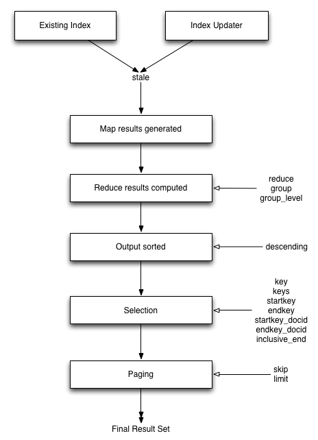

Project Files:
http://bit.ly/1KX2MhR
Installation Files:
http://bit.ly/1R9255T
Or Copy Files From a USB Drive
Open the "installation" folder and follow the setup instructions for your platform
Build Your First
Couchbase Application
Created by Aaron Benton / @bentonam
Repo: https://github.com/bentonam/build-your-first-couchbase-application
About Me
- Shop.com / Market America
- Mobile Architect
- Kansas Jayhawks

Site Features
- Categories
- Brands
- New Products
- Sale Products
- Search
-
Product Detail
- Product Reviews
- Related Products
- Shopping Cart
- Checkout
- Order Tracking
Technologies / SDKs
- CommandBox
- Lucee
- Couchbase
- CFCouchbase
- Couchbase SDK
- Elasticsearch
Couchbase
- Distributed NoSQL Database
- Document Storage as JSON or Binary
- Cluster Friendly
- Scalable Architecture
- Data Replication
CFCouchbase
- CF Wrapper for Couchbase SDK
- get, set, query
- CF to JSON
API Docs:
http://goo.gl/ZGk6za
Documentation:
http://goo.gl/ET2u3n
Exercises
- 5 - 10min / exercise
- Exercises are Progressive
- Instructions for each exercises folder
- Ask Questions
Couchbase Admin
- Document ID Max 250 Bytes
- Max Document Size 20mb
- Couchbase Admin limits you to 2.5kb
Exercise #1
Working with Couchbase Documents
- 1.a - Starting a Lucee Server
- 1.b - Connecting to Couchbase
- 1.c - Exploring Documents
- 1.d - Import Example Data
Document Types for Exercises
- config
- product
- review
- product review counter
- order
- order counter
Static Documents
Exercise #2
Static Documents for Site Config
- 2.a - Create a Site Config Document
- 2.b - Retrieve the Site Config Document
- 2.c - Retrieve the Categories Config Document
- 2.d - Retrieve the Brands Config Document
- 2.e - Retrieve the Banners Config Document
Multiple Gets
Exercise #3
Multi Get Keys
- 3.a - Retrieve the Recent Products
- 3.b - Retrieve the Sale Products
Views and Queries
Views for Creating Indices
- JS Function applied to Every Document
- 2 arguments: doc, meta
- Key, Value and Document ID
- Value can be null
- The emit() function
Map and Reduce
- Map Function
-
Built-in Reduce Functions
- _count
- _sum
- _stats
View Gotchas
- Do not assume that the field will exist
- Emitted Keys are Case sensitive
- Use parseInt() / parseFloat() for numbers
- Validate the meta.type === "json"
- Keys can be a simple or complex value
- Max key size 4096 bytes
Document Data Flow
The document is:
- written to object-managed cache (memory)
- added to the Intra-Cluster Replication Queue
- added to the Disk Queue
- pushed to other clusters via XDCR
after the Disk Queue is flushed - indexed
Views are updated only after the document has been persisted disk
Document Data Flow
View Example
Map Function
function ( doc, meta ) {
if(
doc.doc_type &&
doc.doc_type === "product" &&
doc.title
){
emit( doc.title.toLowerCase(), null );
}
}
Reduce Function
_countQuery Options
- descending
- startkey
- endkey
- startkey_docid
- endkey_docid
- group
- group_level
- inclusive_end
- key
- keys
- reduce
- stale
View Flow
Exercise #4
Introduction to Queries
- 4.a - Create a Categories View in Couchbase
- 4.b - Querying the Categories View
- 4.c - Create a Brands View in Couchbase
- 4.d - Querying the Brands View
Query Grouping
- Unique Keys are Output
- Must be used with a Reduce Function
- group = true
- Different from Group Level
Exercise #5
Query Grouping
- 5.a - Querying the Categories View with Grouping
- 5.b - Querying the Brands View with Grouping
Custom Map Logic
- More than just existence checks
- Multiple emits from a single document
- Any Key / Value can be emitted
Exercise #6
Custom Logic in Map Functions
- 6.a - Create a Sale Products View in Couchbase
- 6.b - Querying the On Sale View
- 6.c - Browsing All On Sale Products
Date Formats
- 2015-08-29 03:40:05 UTC
- Tue Sep 08 2015 12:41:00 GMT-0400 (EDT)
- 2015-07-30T23:58:22.193Z
- 1441730500797
dateToArray()
Takes a valid date and converts it into an array of date parts.
1483175543000 becomes:
[
2015,
3,
22,
11,
3,
38
]dateToArray()
function ( doc, meta ) {
if(
doc.doc_type &&
doc.doc_type === "order" &&
doc.order_date
){
emit( dateToArray( doc.order_date ), null);
}
}View with Date as Key
Exercise #7
Working with Dates using Range Queries
- 7.a - Create a Recent Products View in Couchbase
- 7.b - Querying the Recent View
- 7.c - Browsing All Recent Products
- 7.d - Update the On Sale Products View in Couchbase
- 7.e - Querying the On Sale View
Representing Documents as Objects
Exercise #8
Inflating Documents to Objects
- 8.a - Create a Slug View in Couchbase
- 8.b - Querying the Slug View
Compound Keys
- View keys can be any value
- Compound keys are just arrays
Exercise #9
Compound Keys
- 9.a - Create a Reviews View in Couchbase
- 9.b - Querying the Reviews View to get the Total Reviews
- 9.c - Querying the Reviews View to get the Reviews
Reduce Functions
Couchbase has the following built-in reduce functions:
- _count
- _sum (requires a numeric value for the index)
- _stats (requires a numeric value for the index)
We can also provide our own JS reduce function
Custom Reduce Functions
The reduce function is passed 3 arguments:
- keys - Array of keys returned by the query
- values - Array of values returned by the query
- rereduce - Boolean whether or not to keep reducing
function(keys, values, rereduce){
var sum = values.reduce(
function(a, b) {
return a + b;
}
);
return Math.round((sum / values.length) * 10) / 10;
}Exercise #10
Querying with Custom Reduce Functions
- 10.a - Create a Average Reviews View in Couchbase
- 10.b - Querying Average Reviews View
Query Values
- 10.a - Create a Average Reviews View in Couchbase
- 10.b - Querying Average Reviews View
Query Values
- Only emit the value if you need it
- Each index has a key and a value
- The value can be used in a reduce function
- Sort order only applies to the key not the value
- The value is always returned to the application
Exercise #11
Working with Query Values
- 11.a - Create a Aggregate Reviews View in Couchbase
- 11.b - Querying Aggregate Reviews View
Creating a Primary Key
-
Secondary Indexes
- Conditionally outputs keys / values
-
Primary Key Indexes
- Outputs every key with null value
Exercise #12
Leveraging a Primary Key View
- 12.a - Create a All Products View in Couchbase
- 12.b - Querying the All Products View
Elasticsearch
- Based on Lucene
- Full-text search engine
- REST Based
- JSON Document based
- Market share is 2nd only to Solr
Couchbase and Elasticsearch
- XDCR for Replication between clusters
- XDCR is used to feed Elasticsearch
Exercise #13
Introduction to Elastic Search
- 13.a - Install and Setup Elasticsearch
- 13.b - Create a New Couchbase Cluster Reference
- 13.c - Create a New Couchbase Replication
- 13.d - Calling Elasticsearch for Searching of Products
Exercise #14
Creating a Shopping Cart
- 14.a - Retrieving the Shopping Cart
- 14.b - Saving the Shopping Cart
Exercise #15
Writing Order Documents on Checkout
- 15.a - Retrieve the States
- 15.b - Retrieve the Shipping Methods
- 15.c - Get the Next Order ID
- 15.d - Write the Order
Exercise #16
Order Tracking
- 16.a - Create a Order Lookup View
- 16.b - Retrieve Placed Order
Couchbase Resources
- Developer Guides -
http://goo.gl/7EjZCW
- Webinars -
http://goo.gl/muWrJS
- Whitepapers -
http://goo.gl/YuQc04
- Blog -
http://goo.gl/0ev3D9
- YouTube Channel -
https://goo.gl/V7FWI1
- Forums -
https://goo.gl/x9tjMC
- IRC -
irc.freenode.net/#couchbase
Hiring
- ColdFusion Developers
- iOS Developers
- Android Developers
- Hybrid Developers
- UI/UX Developers
- UI/UX Designers
- Project Managers